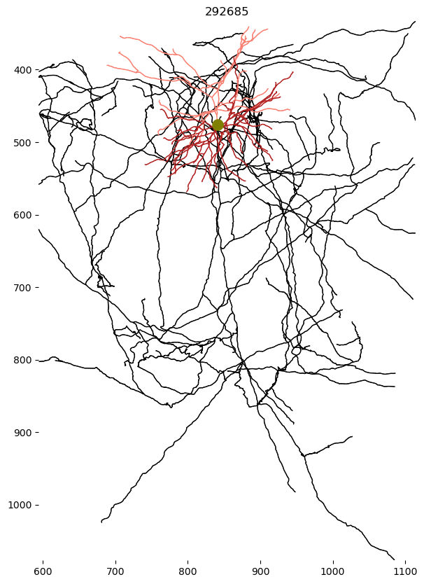
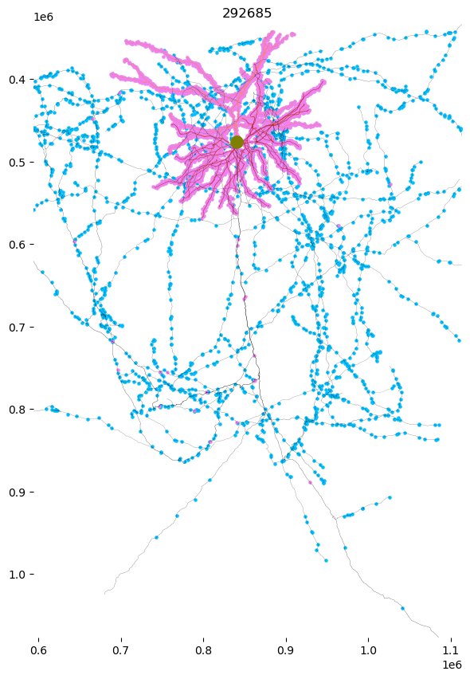
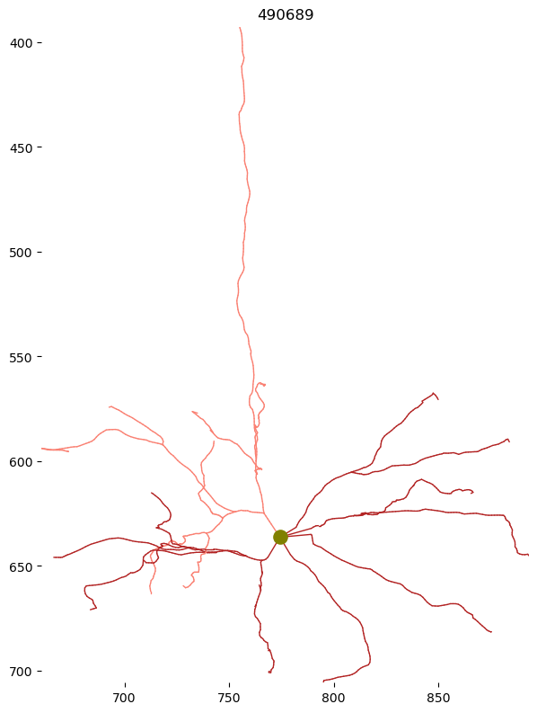
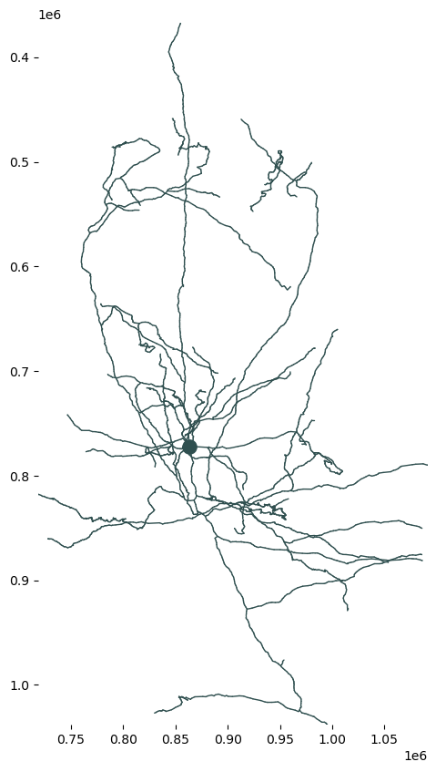

# !pip install caveclient
# !pip install skeleton-plotNeuron Skeletons
Download, visualize, and generate neuron skeletons
Created 7/2/2024 by Bethanny Danskin
MICrONS Tutorial for VORTEX
Depends on the following two packages: CAVEclient and Skeleton-Plot (version>0.0.9)
Skeletons and meshworks are loaded as MeshParty meshwork object
pcg-skel and cloudvolume are necessary if generating your own skeletons from the meshes
Using CAVEclient requires having set up a CAVE auth token. See how to set up your CAVEclient token here.
import numpy as np
import pandas as pd
import matplotlib.pyplot as plt
from datetime import datetimefrom caveclient import CAVEclient
# Initialize a client for the "minnie65_public" datastack.
client = CAVEclient(datastack_name='minnie65_public')
# see the available materialization versions
client.materialize.get_versions()
# Uncomment to get more details on each release version
# client.materialize.get_versions_metadata()[1078, 117, 661, 343, 795, 943]# set materialization version, for consistency
materialization = 1078 # current public as of 6/5/2024
# materialization = 661 # version at which skeletons were pre-generated
client.version = materializationimport skeleton_plot as skelplot
import skeleton_plot.skel_io as skel_ioSet paths to the public repository
The skeletons of the meshes are calculated at specific timepoints. The last collection of all neurons in the dataset was at materialization version 661.
Both the .swc skeletons and .h5 meshwork objects are available in the BossDB repository
# path to the skeleton .swc files
skel_path = "s3://bossdb-open-data/iarpa_microns/minnie/minnie65/skeletons/v661/skeletons/"
# path to the skeleton and meshwork .h5 files
mesh_path = "s3://bossdb-open-data/iarpa_microns/minnie/minnie65/skeletons/v661/meshworks/"Example: load cell with known nucleus id and segment id
# Skeleton
nucleus_id = 292685
segment_id = 864691135122603047
skel_filename = f"{segment_id}_{nucleus_id}.swc"
# load the .swc skeleton
sk = skel_io.read_skeleton(skel_path, skel_filename)# load the meshwork (may take minutes to locate, if using public credentials)
mesh_filename = f"{segment_id}_{nucleus_id}.h5"
mw = skel_io.load_mw(mesh_path, mesh_filename)Plot skeleton
f, ax = plt.subplots(figsize=(7, 10))
skelplot.plot_tools.plot_skel(
sk,
title=nucleus_id,
line_width=1,
plot_soma=True,
invert_y=True,
pull_compartment_colors=True,
x="z",
y="y",
skel_color_map = { 3: "firebrick",4: "salmon",2: "black",1: "olive" },
)
ax.spines['right'].set_visible(False)
ax.spines['left'].set_visible(False)
ax.spines['top'].set_visible(False)
ax.spines['bottom'].set_visible(False)
# ax.axis('off')
Plot meshwork
The meshwork object (h5 file) includes additional information about the input and output synapse positions along the skeleton
f, ax = plt.subplots(figsize=(7, 10))
skelplot.plot_tools.plot_mw_skel(
mw,
title=nucleus_id,
pull_radius = True,
line_width=1,
plot_soma=True,
invert_y=True,
pull_compartment_colors=True,
x="z",
y="y",
skel_color_map = { 3: "firebrick",4: "salmon",2: "black",1: "olive" },
plot_presyn = True,
plot_postsyn = True,)
ax.spines['right'].set_visible(False)
ax.spines['left'].set_visible(False)
ax.spines['top'].set_visible(False)
ax.spines['bottom'].set_visible(False)
# ax.axis('off')
Example: load a neuron you have seen in neuroglancer
Let’s say you have observed a cell in neuroglancer that you want to work with, like this pyramidal cell (https://neuroglancer.neuvue.io/?json_url=https://global.daf-apis.com/nglstate/api/v1/6320379988541440)
root_id_v1078 = 864691135356151759The segment root_id may change with time, but the 6-digit nucleus id is much more static. Look up the nucleus id from the current root id
nuc_df = client.materialize.tables.nucleus_detection_v0(pt_root_id=root_id_v1078).query()
nucleus_id = nuc_df.id.item()
print(nucleus_id)490689Now use the nucleus id to look up the previous segmentation root id for v661
(this is necessary to find the exact filename match. But alternately, you can use directory search to find the matching filenames with just the nucleus id)
segment_id = client.materialize.tables.nucleus_detection_v0(id=nucleus_id).query(
materialization_version=661).pt_root_id.item()
segment_id864691135851524807# Load Skeleton
skel_filename = f"{segment_id}_{nucleus_id}.swc"
sk = skel_io.read_skeleton(skel_path, skel_filename)Plot skeleton
f, ax = plt.subplots(figsize=(7, 10))
skelplot.plot_tools.plot_skel(
sk,
title=nucleus_id,
line_width=1,
plot_soma=True,
invert_y=True,
pull_compartment_colors=True,
x="z",
y="y",
skel_color_map = { 3: "firebrick",4: "salmon",2: "black",1: "olive" },
)
ax.spines['right'].set_visible(False)
ax.spines['left'].set_visible(False)
ax.spines['top'].set_visible(False)
ax.spines['bottom'].set_visible(False)
# ax.axis('off')
Note that this skeleton has no axon compartment. That is because the axon has only been proofread after the skeleton was created. Non-proofread cells do not have their axon statistics generated.
Example: querying the proofread cells
Cells that have undergone proofreading in the dataset are annotated in the proofreading_status_and_strategy table. For more information, see the MICrONS-Explorer proofreading documentation
# Load cells that have undergone proofreading
proof_df = client.materialize.tables.proofreading_status_and_strategy(status_axon=True).query(
select_columns = ['pt_root_id','pt_position','status_dendrite','status_axon','strategy_dendrite','strategy_axon'],
materialization_version=1078)
# This gives you the list of cells with axonal proofreading, anywhere in the dataset
proof_df.head()Table Owner Notice on proofreading_status_and_strategy: NOTE: this table supercedes 'proofreading_status_public_release'. For more details, see: www.microns-explorer.org/manifests/mm3-proofreading.| pt_root_id | status_dendrite | status_axon | strategy_dendrite | strategy_axon | pt_position | |
|---|---|---|---|---|---|---|
| 0 | 864691135617152361 | t | t | dendrite_extended | axon_partially_extended | [185152, 185344, 21255] |
| 1 | 864691136090326071 | t | t | dendrite_extended | axon_fully_extended | [192080, 190064, 22297] |
| 2 | 864691135082864887 | t | t | dendrite_extended | axon_interareal | [303659, 166262, 17349] |
| 3 | 864691136195284556 | t | t | dendrite_extended | axon_fully_extended | [173184, 217472, 21929] |
| 4 | 864691135565870679 | t | t | dendrite_clean | axon_fully_extended | [184384, 108896, 21755] |
Note: for v661, the current preferred proofreading table did not exist. Use proofreading_status_public_release instead
# Load cells that have underwent proofreading for v661
proof_df = client.materialize.tables.proofreading_status_public_release().query(
select_columns = ['pt_root_id','pt_position','status_dendrite','status_axon'],
materialization_version=661)
# This gives you the list of cells with axonal proofreading, anywhere in the dataset
proof_df.head()Table Owner Notice on proofreading_status_public_release: NOTE: this table is deprecated and no longer receiving updates; please use 'proofreading_status_and_strategy' which is available in datastack version >= 1078 (datastack = minnie65_public or minnie65_phase3_v1).| pt_root_id | status_dendrite | status_axon | pt_position | |
|---|---|---|---|---|
| 0 | 864691134884807418 | extended | extended | [299067, 123129, 22993] |
| 1 | 864691134885430010 | extended | non | [181280, 223040, 21399] |
| 2 | 864691134885645050 | extended | non | [172288, 222528, 21607] |
| 3 | 864691134918370314 | clean | clean | [170528, 226848, 20316] |
| 4 | 864691134918461194 | clean | clean | [189760, 127520, 20540] |
Final example: generate skeletons with pcg_skel
This will let you create skeletons for more recently proofread cells that do not exist in the publicly pregenerated .swc files. However, these skeletons will come without apical dendrite labels
# !pip install pcg-skel
# !pip install cloud-volumeimport cloudvolume
import pcg_skel
# specify the materialization version
client.materialize.version = 1078
# initialize cloudvolume client
cv_minnie = cloudvolume.CloudVolume(client.info.segmentation_source(), use_https=True)# pcg-skel pipeline code
input_id = 864691135639556411
id_is_nuc = False
# Cell identification meta
synapse_table = client.info.get_datastack_info()['synapse_table']
if id_is_nuc:
id_col = 'id'
else:
id_col = 'pt_root_id'
use_view = True
if use_view:
row = client.materialize.query_view('nucleus_detection_lookup_v1',
filter_equal_dict = {id_col: input_id})
else:
row = client.materialize.query_table('nucleus_detection_v0',
filter_equal_dict = {id_col: input_id})
row = row.drop('created', axis = 1)
nuc_id = int(row['id'])
root_id = int(row['pt_root_id'])
root_point = row['pt_position'].values[0]
print(f'starting on body {nuc_id}, {root_id}')
# create whole neuron with radius info
resample_spacing = 1510
collapse_soma = True
collapse_radius = 10_000
res = [4, 4, 40]
nrn = pcg_skel.coord_space_meshwork(root_id,
client=client,
root_point=root_point,
root_point_resolution=res,
collapse_soma=collapse_soma,
collapse_radius=collapse_radius,
synapses='all',
synapse_table=synapse_table,
cv = cv_minnie)
# add radius properties df to annotations
pcg_skel.features.add_volumetric_properties(nrn, client)
print('adding segment properties')
pcg_skel.features.add_segment_properties(nrn)
print('segment properties added')starting on body 267207, 864691135639556411
adding segment properties
segment properties addedf, ax = plt.subplots(figsize=(7, 10))
skelplot.plot_tools.plot_verts(nrn.skeleton.vertices,
nrn.skeleton.edges,
nrn.skeleton.radius,
plot_soma=True,
soma_node=nrn.skeleton.root,
x="z",
y="y")
ax.spines['right'].set_visible(False)
ax.spines['left'].set_visible(False)
ax.spines['top'].set_visible(False)
ax.spines['bottom'].set_visible(False)
plt.gca().invert_yaxis()
Save SWC file
# create compartment label
compartment_labels = np.zeros(len(nrn.skeleton.vertices)).astype(int)
# add soma label
compartment_labels[int(nrn.skeleton.root)]=1
# get the mesh volume properties
volume_df = nrn.anno.segment_properties.df
# add column indicating skel index
volume_df['skel_index'] = nrn.anno.segment_properties.mesh_index.to_skel_index_padded
sk_volume_df = volume_df.drop_duplicates('skel_index').sort_values('skel_index').reset_index()
# set map for skel index -> radius
radius_labels = np.array(sk_volume_df['r_eff']) / 1000
# metadata dictionary for keeping vertex variables together
skeleton_properties = {}
skeleton_properties['compartment'] = compartment_labels
skeleton_properties['vertices'] = nrn.skeleton.vertices
skeleton_properties['edges'] = nrn.skeleton.edges
skeleton_properties['radius'] = radius_labelsnrn.skeleton.export_to_swc(filename = 'test.swc',
node_labels=compartment_labels,
radius=radius_labels,
avoid_root=True,
resample_spacing = resample_spacing)Optional: generate myelin labels from myelin table
For the subset of neurons with manual labeling of myelination, see CAVE table and documentaiton for vortex_manual_myelination_v0
# Skeleton utility functions
from tqdm.notebook import tqdm, trange
tqdm.pandas()
def get_myelin_at_vertex(mw, myelin_df, properties_dict, client, cv):
# given a df of all myelinated points on the axon, return the corresponding skeleton labels to the properties dictionary
# get level2 nodes at myelinated positions
myelin_lvl2 = myelin_df.progress_apply(pd_get_level2_point, axis=1, client=client, cv=cv)
# generate index lookup
mw_index_lookup = get_meshwork_index_lookup(mw)
# merge myelin_lvl2 to index lookup
myelin_merge = pd.merge(myelin_lvl2, mw_index_lookup, on='lvl2_id', how='inner')
# empty myelin labels
try:
vertices = properties_dict['vertices']
except:
print('no vertex properties found; call get_skeleton_features_from_meshwork() first')
myelin = np.zeros(len(vertices))
# where myelin is present, set to 1
myelin[myelin_merge.skel_ind.values] = 1
properties_dict['myelin'] = myelin
return properties_dict
def pd_get_level2_point(row, client, cv, voxel_resolution=[4,4,40]):
point, root_id = row[['pt_position','valid_id']]
try:
lvl2_id = pcg_skel.chunk_tools.get_closest_lvl2_chunk(point,
root_id,
client,
voxel_resolution=voxel_resolution,
radius=200)
row['lvl2_id'] = lvl2_id
except:
row['lvl2_id'] = np.nan
return row
def get_meshwork_index_lookup(mw):
# generate index lookup with lvl2, mesh, and skeleton indices
mw_index_lookup = mw.anno.lvl2_ids.df
mw_index_lookup['skel_ind'] = mw.mesh_indices.to_skel_index_padded
mw_index_lookup.set_index('mesh_ind_filt', inplace=True)
return mw_index_lookup# get myelin-labeled points (exists for a subset of manually annotated cells)
myelin_df = client.materialize.tables.vortex_manual_myelination_v0(valid_id=input_id, tag='t').query(
select_columns=['valid_id','tag','pt_position'],
materialization_version=1078,
)
print(len(myelin_df))Table Owner Notice on vortex_manual_myelination_v0: Myelination status assessed for the axon of the VALID_ID, not the pt_root_id.197# Add myelin info (this takes upwards of 10 minutes to convert points to vertices)
skeleton_properties = get_myelin_at_vertex(nrn, myelin_df, skeleton_properties, client=client, cv=cv_minnie)print(skeleton_properties){'compartment': array([0, 0, 0, ..., 0, 0, 1]), 'vertices': array([[ 395328., 547312., 924200.],
[ 396992., 546184., 923360.],
[ 397712., 545840., 922760.],
...,
[1313160., 846424., 797800.],
[1314944., 847008., 792760.],
[ 717824., 771840., 863120.]]), 'edges': array([[ 842, 866],
[ 866, 867],
[ 867, 868],
...,
[4602, 4595],
[4595, 4596],
[4596, 4597]], dtype=int64), 'radius': array([0.12334736, 0.12334736, 0.12334736, ..., 0.13528796, 0.13528796,
5.54981555]), 'myelin': array([0., 0., 0., ..., 0., 0., 0.])}Addendum: useful chunkedgraph functions (getting segments across time)
Because the segment id may have changed since the skeletons were calculated, find the past segment id of this object
Chunkedgraph documentation and functions
client.materialize.get_versions()[1078, 117, 661, 343, 795, 943]# Get info on version 661
client.materialize.get_versions_metadata()[2]{'datastack': 'minnie65_public',
'is_merged': False,
'status': 'AVAILABLE',
'version': 661,
'id': 688,
'valid': True,
'time_stamp': datetime.datetime(2023, 4, 6, 20, 17, 9, 199182, tzinfo=datetime.timezone.utc),
'expires_on': datetime.datetime(2125, 3, 27, 19, 17, 9, 199182, tzinfo=datetime.timezone.utc)}timestamp_v661 = client.materialize.get_versions_metadata()[2]['time_stamp']
timestamp_latest = client.materialize.get_versions_metadata()[0]['time_stamp']client.chunkedgraph.suggest_latest_roots(segment_id, timestamp=timestamp_latest)864691135356151759client.chunkedgraph.get_root_timestamps(root_id_v1078)array([datetime.datetime(2024, 4, 10, 4, 7, 54, 947000, tzinfo=<UTC>)],
dtype=object)client.chunkedgraph.is_latest_roots(864691135808631069)array([ True])